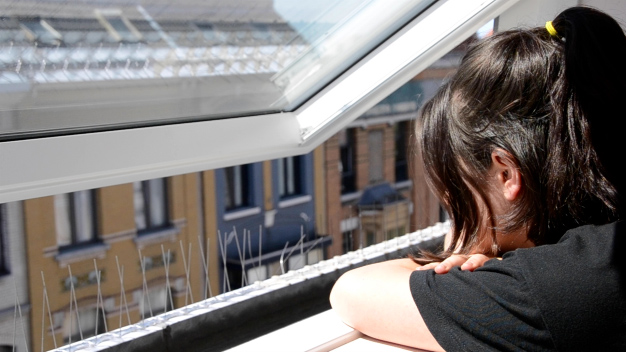
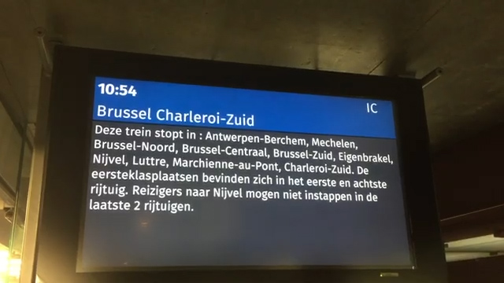
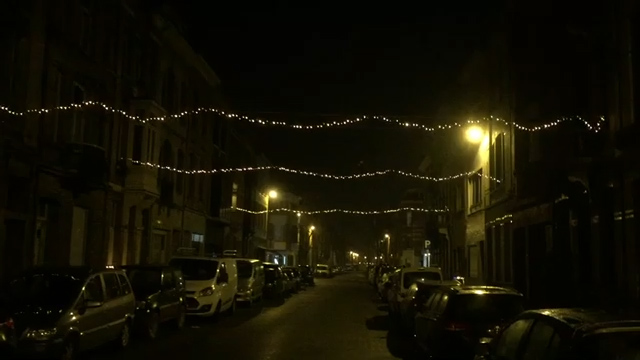

Dit is mijn video-essay over eenzaamheid. Gemaakt in opdracht van de!Kunsthumaniora voor jury ex2 (2020).

Dit is een groepswerk dat ik heb geleid, dat dateert van voor ik op de!Kunsthumaniora zat.
Een kleine herinnering aan mijn citytrip naar Brussel met mijn vriendinnen.

En toen was er het idee om kerstlichtjes op te hangen in onze straat.
